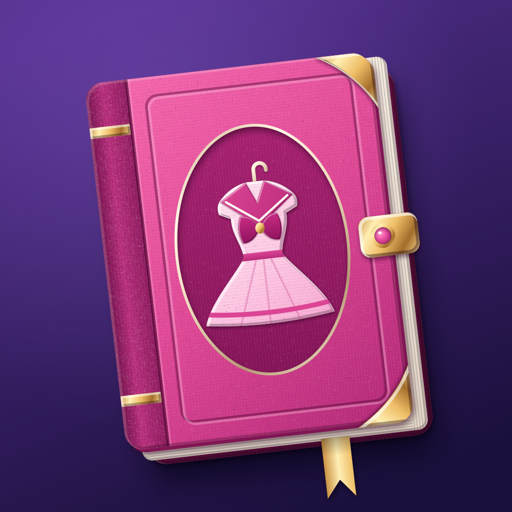
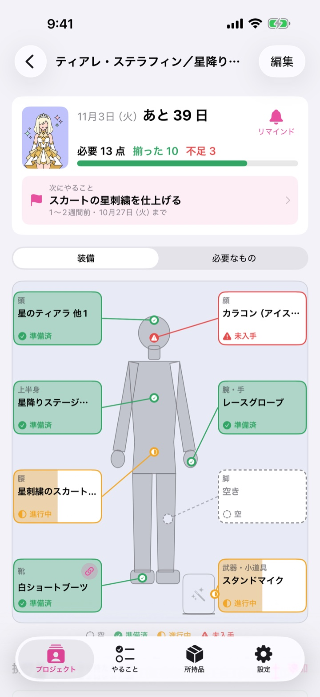
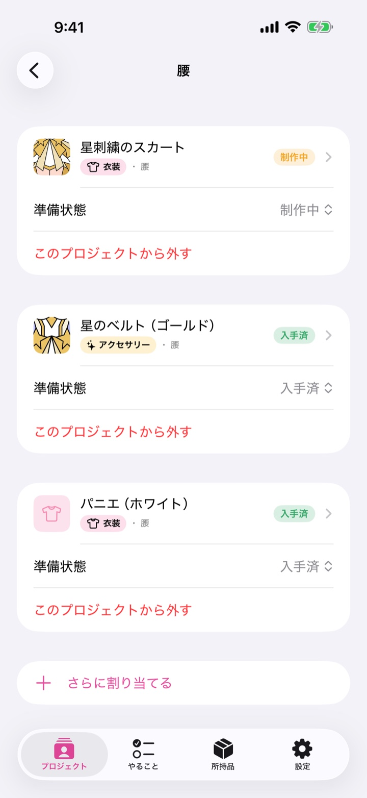
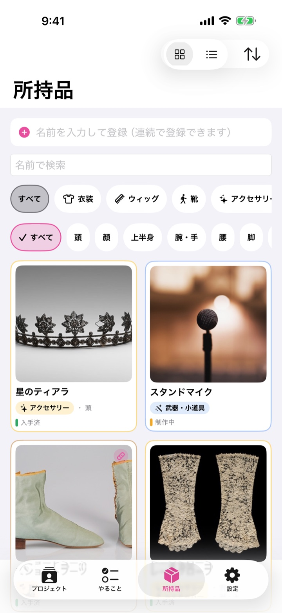
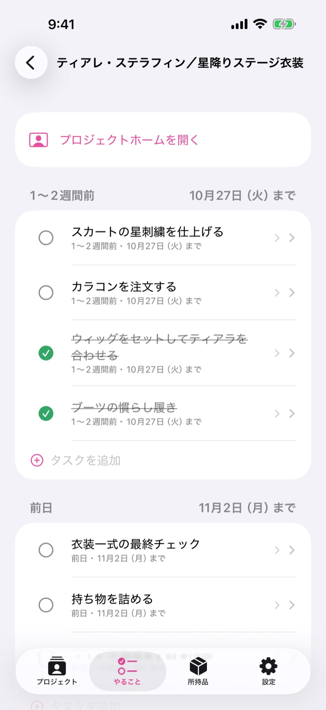
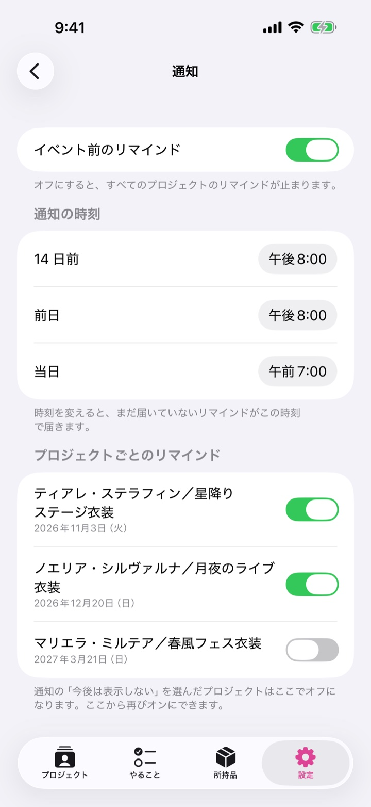
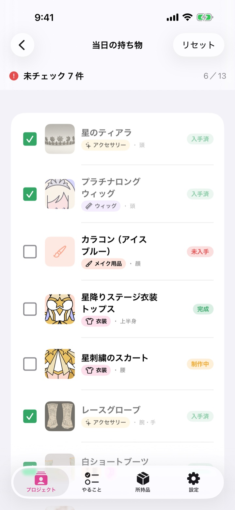

コスプレ準備を、ひとつに。
イベントまでの衣装・装備・準備タスク・当日の持ち物を、キャラクターごとに 1 か所で。何が足りないかがすぐ分かる、日本のコスプレイヤーのための準備ノート。
App Store で入手近日公開アカウント登録なしデータは iPhone の中だけ基本機能は無料

コスプレの準備、こんなことありませんか？
衣装・小物が散らばる
家のあちこち、複数のキャラで使い回し。何をどこに持っているか分からない
何が足りないか分からない
買った？作った？届いた？を思い出せない
イベント前に準備漏れ
前日になって「ウィッグのセットまだだった」
当日の忘れ物
会場で気づく、カラコン・安全ピン・SD カード
コスノートは、それを 1 つのプロジェクトにまとめます。
キャラごとの「プロジェクト」に、装備をまとめる
キャラクター×衣装ごとにプロジェクトを作ると、必要なものと準備状況が 1 画面に。衣装・ウィッグ・靴・武器・小道具は、装備画面のように身体の位置ごとに並び、準備済・進行中・未入手が色で分かります。身体の位置を持たない素材・工具・メイク用品も同じプロジェクトで。
- 必要／揃った／不足がひと目で
- 頭・上半身・腕・腰・脚・靴・武器の位置ごとに割り当て
- リスト表示にも切り替え可能


持っている物は、プロジェクトをまたいで
所持品は 1 か所に登録して、複数のプロジェクトで使い回せます。種別（衣装・ウィッグ・靴・アクセサリー・武器・小道具・メイク用品・素材・工具・その他）と身体の位置で絞り込み、名前でも探せます。写真を付ければ見分けやすく。
イベント日から逆算して、次にやることを迷わない
イベント日を入れると、1〜2 週間前・前日・当日・撤収の準備タスクが並びます。項目は自由に足せます。「やること」タブでは、これからのプロジェクトを横断して未完了を確認。リマインドは 14 日前・前日・当日の 3 回（時刻は変更可）。準備がすべて済んでいれば最終確認のお知らせに変わります。



当日は、持ち物チェックだけ
当日の持ち物をその場でチェック。未チェックが残っていれば一目で分かります。イベントが終わったプロジェクトは消えずに一覧の下へ。
次のイベントの準備を、コスノートで。
App Store で入手近日公開iPhone（iOS 17 以降）。日本語。